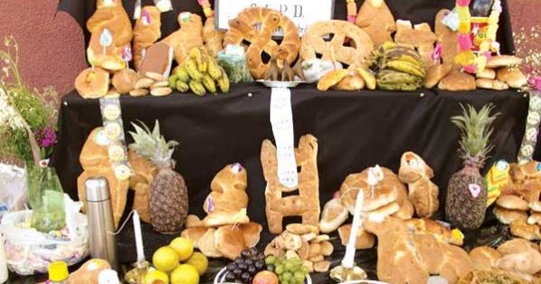

Gastronomia
La gastronomía boliviana para el Día de Todos los Santos gira en torno al "mast'aku", una mesa elaborada para recibir las almas de los difuntos, con panes especiales como las t'antawawas (niños de pan) y dulces como rosquetes y suspiros. También se incluye la comida preferida del difunto, como el ají de fideo o el sillpancho, y bebidas como chicha y cerveza, todo acompañado de frutas y flores en las ofrendas